Chapter 9 · Part 2 — The Thing
Annie took the fruit from the monkey. “This is it,” she said. “The thing we need.”
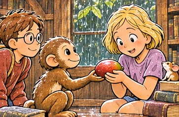
“What thing?” said Jack.
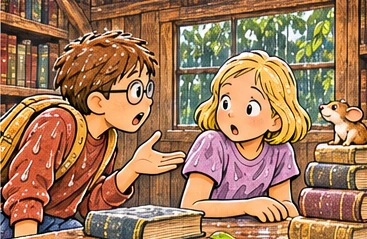
“One of the special things we’re supposed to find for Morgan,” Annie said. “To free her from the spell.”
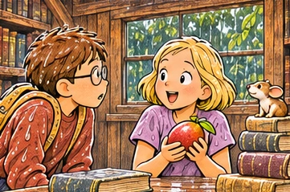
“Are you sure?” said Jack.
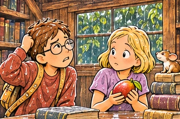
Before Annie could answer, Jack saw the Pennsylvania book. “Look! Our book!” he said, pointing.
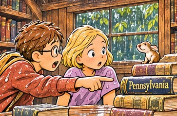
“We found the thing. And now we can see the book,” said Annie. “That’s the way it works, remember?”
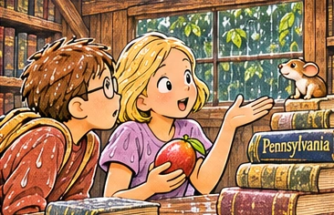
Jack nodded. Now he remembered. The ninja master said they wouldn’t be able to find the Pennsylvania book until they had found what they were looking for.
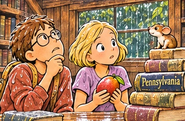
The monkey screeched with laughter.
Jack and Annie looked at him. He was clapping his hands together.
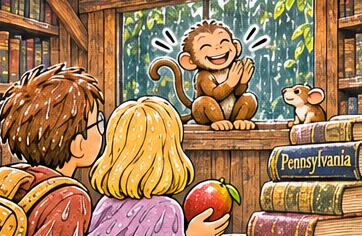
Annie laughed with him. “How did you know to give this to us?” she said. “Who told you to do that?”
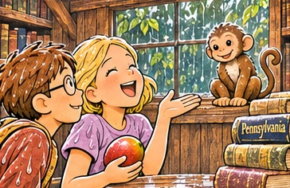
The monkey just waved at Jack and Annie. Then he turned and swung away out of the tree house.
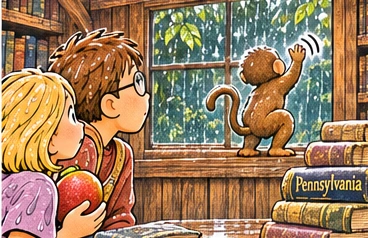
“Wait!” said Jack, looking out the window.
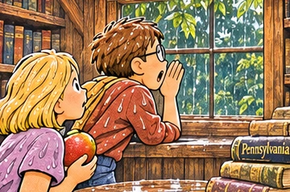
Too late.
The monkey was gone. He had vanished below the treetops.
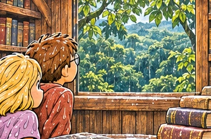
“Good-bye!” called Annie.
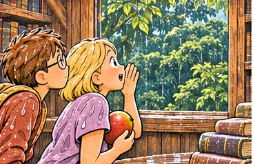
A happy screech came from the mysterious world below.
Jack sighed. He picked up his notebook again. He looked at his writing:
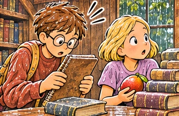
The Amazon rain forest is
He had to write something before they left. He quickly added—
amazing
Jack put away his notebook. Annie picked up the Pennsylvania book.
“Now it’s really time to leave,” she said.
She turned to the picture of the Frog Creek woods. “I wish we could go there,” she said, pointing at the picture.
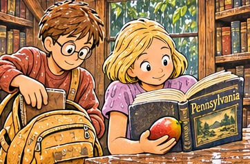
The wind started to blow.
The leaves began to tremble.
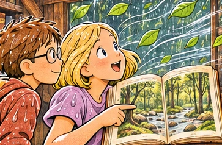
The tree house began to spin.
It spun faster and faster.
Then everything was still.
Absolutely still.